Camp I Am Me | Quack for a Cause Ducky Dash
Making the Ducky Dash Look Joyfully Ridiculous
A prompt strategy for generating fun, silly, scroll-stopping event images that still feel warm, mission-connected, and usable for promotion.
Approach: start with clear nonprofit campaign goals, add absurd duck scenarios, keep every image text-free, then add event details manually in the final design.
The Creative Shift
From Cute Event Promo to Ridiculous Duck Spectacle
The first prompts were clean, cheerful, and nonprofit-safe. The stronger campaign lane came from pushing the visual premise further: ducks behaving like athletes, executives, reporters, pit crews, fans, and champions.
Keep the Core
Every image still shows rubber ducks, water, race energy, and a bright event setting. The fundraiser remains instantly understandable.
Add the Absurd
The humor comes from treating rubber ducks as if they are taking the race far too seriously.
Protect the Design
The prompts ask for no readable text or logos, plus open space for headlines, so the final materials stay editable and professional.
Prompt Formula
The Reusable Pattern
Each prompt used the same backbone, then swapped in a different ridiculous scene idea.
A silly, over-the-top promotional image for a nonprofit rubber duck race fundraiser, [ridiculous scene idea], bright indoor waterpark setting, yellow rubber ducks, splashing water, joyful chaos, family-friendly humor, warm hopeful nonprofit tone, Camp I Am Me brand colors dark blue #24588D, red #BE1E2D, orange #F15A29, yellow #FBB040, clean composition with space for headline text, high quality playful digital illustration, no readable text, no logos
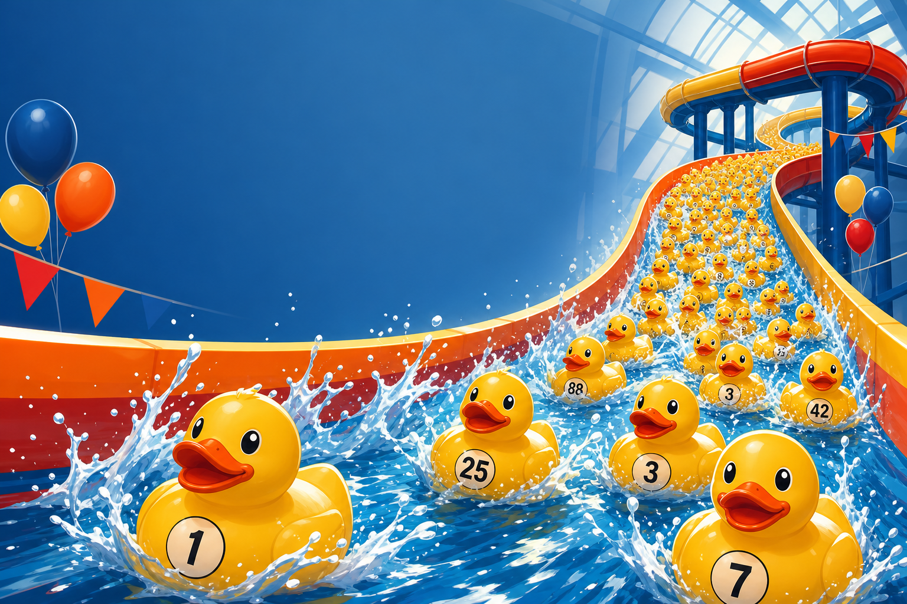
The Clean Event Anchor
This prompt established the basic event visual: lots of ducks, water, motion, and family-friendly excitement. It is useful as the straightforward hero before the campaign gets weirder.
A joyful promotional image for a nonprofit rubber duck race fundraiser, hundreds of numbered yellow rubber ducks racing down a bright indoor waterpark waterslide, splashing water, energetic motion, family-friendly excitement, clean composition, warm hopeful mood, brand colors dark blue #24588D, red #BE1E2D, orange #F15A29, yellow #FBB040, space at top for event title, high quality digital illustration
Best use: main event awareness or website banner.
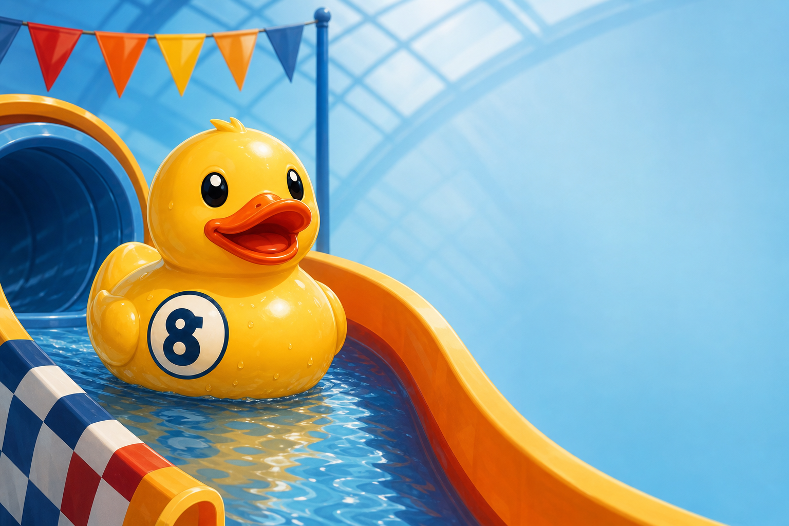
One Duck, One Action
This focused the image around the adoption action. A single duck with a race number gives the audience something to root for and leaves room for a direct call to action.
A cheerful yellow rubber duck with an official race number on its side, sitting at the top of a waterslide starting line, playful confident expression, bright waterpark setting, clean background, nonprofit fundraiser promotion, warm and family-friendly, Camp I Am Me brand palette of dark blue, red, orange, and yellow, space on the right for text
Best use: "Adopt yours" posts and ads.
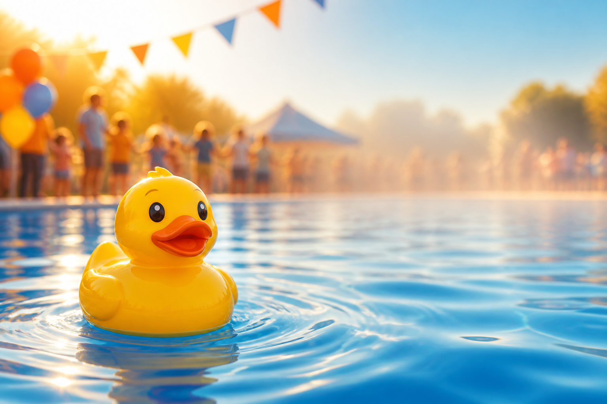
Warmth Behind the Fun
This prompt softened the scene so the campaign could connect the duck race to hope, healing, and community without becoming sad or clinical.
A heartwarming nonprofit fundraising image with a yellow rubber duck floating in bright blue water, soft background showing a welcoming community celebration, warm smiles, hopeful atmosphere, gentle sunlight, colors inspired by dark blue #24588D, orange #F15A29, yellow #FBB040, clean uncluttered composition, space for text, not medical, not sad
Best use: donor-facing posts or email headers.
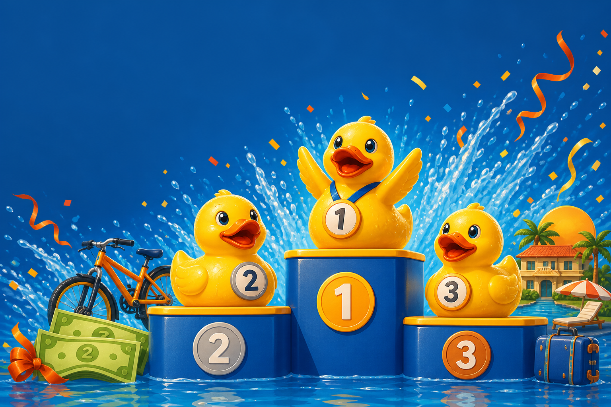
Make Winning Visual
The podium gave the prize message an instant structure. Subtle props suggest cash, bicycles, and a stay without relying on AI-generated text.
Three cheerful numbered rubber ducks on a winner podium, first place duck celebrating, festive water splash background, subtle prize icons suggesting cash, bicycles, and a resort stay, bright family-friendly nonprofit fundraiser style, clean composition, dark blue #24588D background accents, orange and yellow celebration details, room for headline text
Best use: prize announcement and reminders.
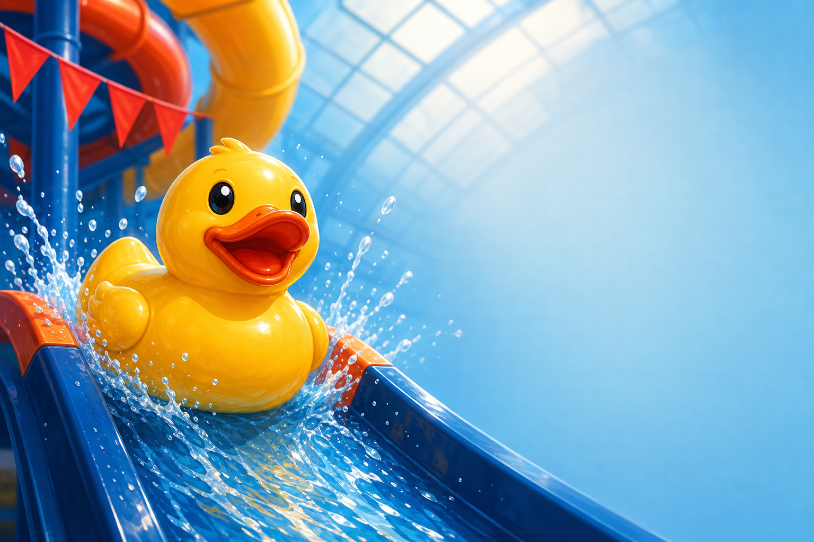
Urgency Without Pressure
The duck at the edge of the slide creates a natural countdown feeling. It is playful urgency: the race is about to start, so adopt before the moment passes.
A yellow rubber duck at the edge of a waterslide about to launch into a race, dramatic but playful motion, splashing water, exciting countdown feeling, clean bright indoor waterpark setting, family-friendly nonprofit event promotion, brand colors dark blue, red, orange, yellow, space for short countdown text
Best use: "Ducks are going fast" or final-week posts.
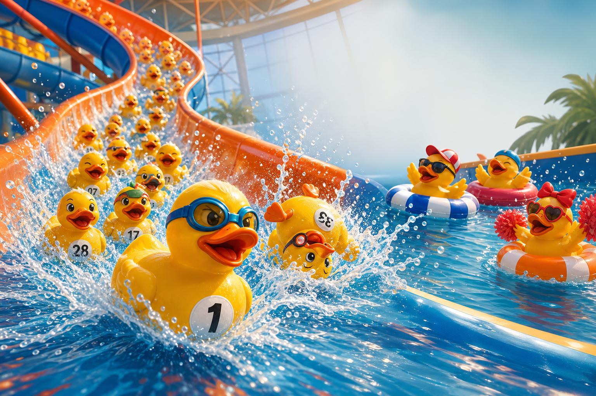
Start the Chaos
This was the pivot into ridiculous. Goggles, floating spectators, and exaggerated race drama make the event feel like a tiny duck championship.
A silly, over-the-top promotional image for a nonprofit rubber duck race fundraiser, a huge pack of yellow rubber ducks blasting down a bright indoor waterpark waterslide like an absurd championship race, with one heroic duck in tiny swim goggles dramatically leading the pack, another duck spinning backward in joyful chaos, and a few ducks cheering from inflatable pool floats nearby, bright indoor waterpark setting, splashing water, joyful chaos, family-friendly humor, warm hopeful nonprofit tone, Camp I Am Me brand colors dark blue #24588D, red #BE1E2D, orange #F15A29, yellow #FBB040, clean composition with space for headline text, high quality playful digital illustration, no readable text, no logos
Overlay idea: Adopt a Duck. Start the Chaos.
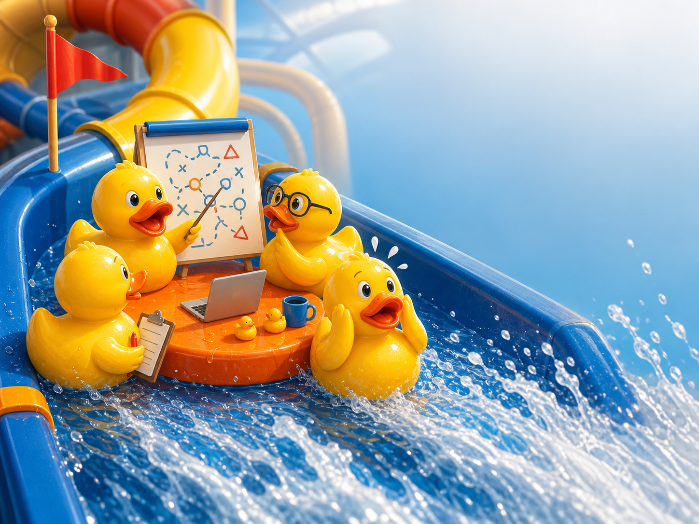
Too Much Strategy
The joke is that ducks do not need a strategy, but they are holding a very serious meeting anyway. That makes the "pure duck-luck" idea visual.
A ridiculous promotional image for a nonprofit rubber duck race fundraiser, a group of serious-looking rubber ducks having a tiny board meeting at the top of a waterslide before the race, one duck pointing at a race strategy chart with nonsense shapes, another duck wearing tiny glasses, another holding a tiny clipboard, then chaos as the slide is about to start, bright indoor waterpark setting, yellow rubber ducks, splashing water, family-friendly humor, clean composition with space for text, brand colors dark blue #24588D, red #BE1E2D, orange #F15A29, yellow #FBB040, high quality playful digital illustration, no readable text, no logos
Overlay idea: Race Strategy: Pure Duck-Luck.
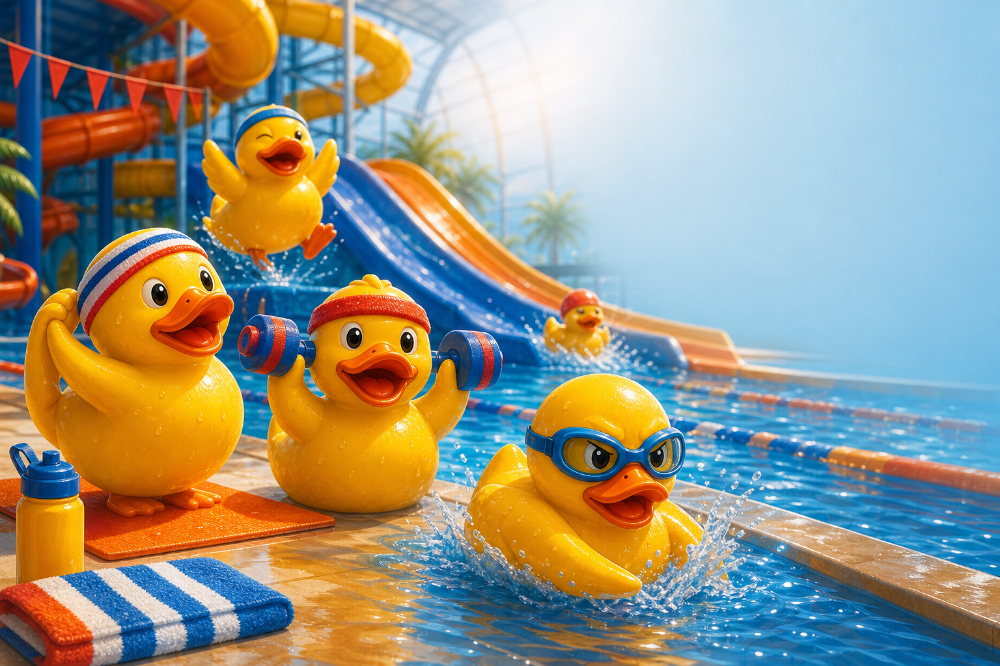
Athletes Who Mostly Float
The sports-movie framing makes the ducks feel comically determined. Sweatbands, goggles, and foam dumbbells are specific enough for the generator to produce a memorable scene.
A silly promotional image for a nonprofit rubber duck race fundraiser, rubber ducks training intensely for a waterslide race, one duck lifting tiny foam dumbbells, one duck stretching with a sweatband, one duck wearing goggles looking extremely focused, a waterslide race course in the background, bright indoor waterpark setting, playful ridiculous sports-movie energy, yellow ducks, splashing water, family-friendly nonprofit tone, clean open space for headline text, brand colors dark blue, red, orange, yellow, high quality playful digital illustration, no readable text, no logos
Overlay idea: Training Hard. Floating Harder.
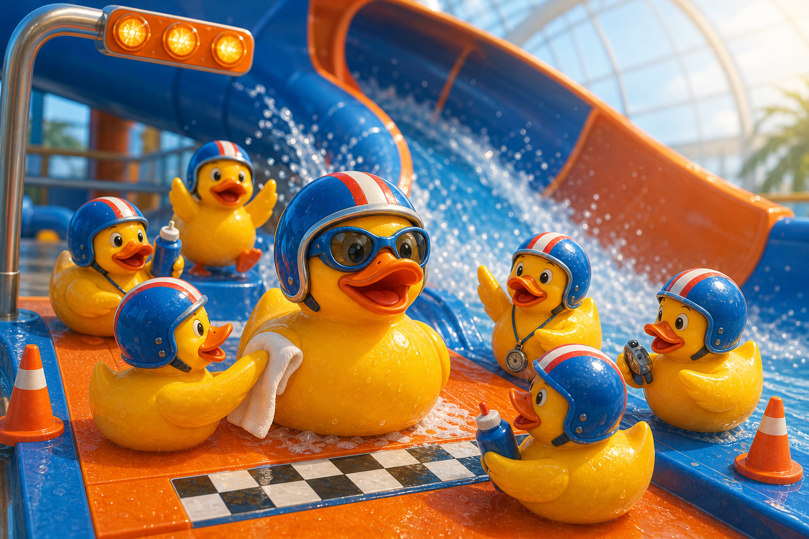
Race Prep, Overdone
The pit crew prompt gives the race a behind-the-scenes story. Tiny helmets, towels, water bottles, and a stopwatch create visual jokes without needing any words.
A silly and ridiculous promotional image for a nonprofit rubber duck race fundraiser, a rubber duck race pit crew preparing one champion duck before a waterslide launch, tiny helmets, tiny towels, tiny water bottles, one duck checking a stopwatch, another polishing the champion duck, bright indoor waterpark starting line, joyful chaos, splashing water, family-friendly humor, warm nonprofit tone, clean composition with room for headline text, Camp I Am Me brand colors dark blue #24588D, red #BE1E2D, orange #F15A29, yellow #FBB040, high quality playful digital illustration, no readable text, no logos
Overlay idea: Our Ducks Take This Very Seriously.
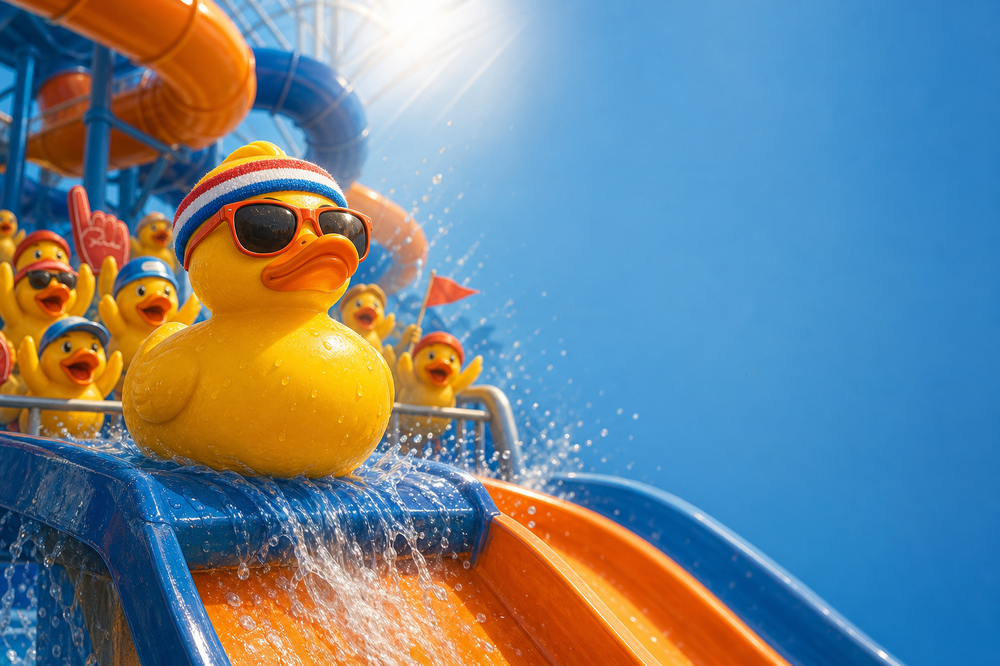
Tiny Sunglasses, Big Stakes
This prompt works because it treats one duck like the star of a dramatic race poster. The seriousness is the joke.
A ridiculous nonprofit fundraiser promo image, one determined yellow rubber duck at the top of a waterslide wearing tiny sunglasses and a sweatband, looking absurdly serious before the big race, dramatic splash lighting, other rubber ducks in the background reacting with excitement, bright indoor waterpark setting, playful comedy, family-friendly, warm and hopeful, dark blue #24588D accents, red #BE1E2D, orange #F15A29, yellow #FBB040, clean negative space for short headline text, polished digital illustration, no readable text, no logos
Overlay idea: This Duck Came to Dash.
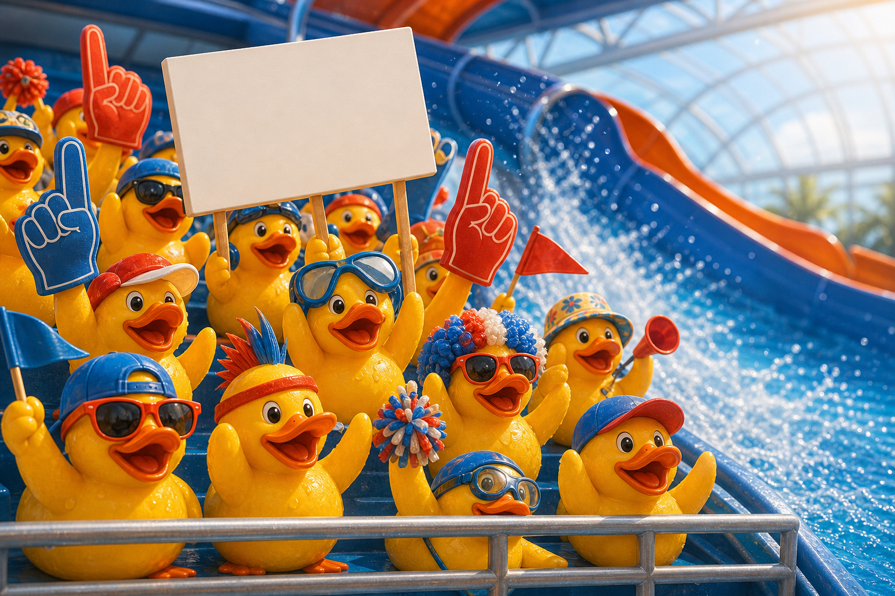
The Crowd Goes Wild
The fan section gives the event a game-day feeling. A blank sign was requested so final copy can be added later instead of relying on AI text.
A funny promotional image for a nonprofit rubber duck race fundraiser, a crowd of rubber ducks in a tiny fan section cheering wildly for a waterslide race, some wearing foam fingers, tiny hats, swim goggles, and silly accessories, one duck holding a blank sign with no readable text, bright indoor waterpark setting, colorful splashes, joyful family-friendly chaos, clean composition with space for event copy, Camp I Am Me brand colors dark blue, red, orange, yellow, high quality playful digital illustration, no readable text, no logos
Overlay idea: Your Duck Needs Fans.
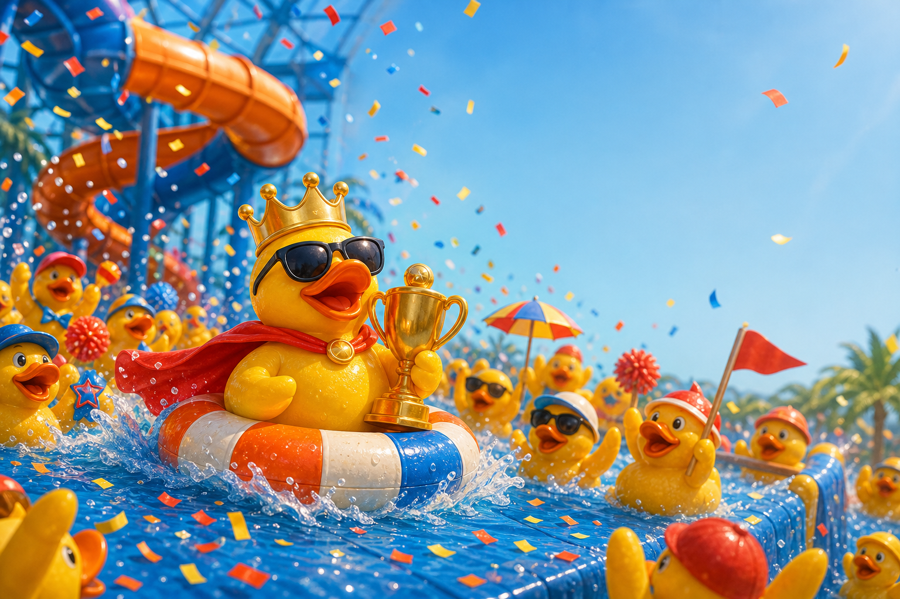
Celebrate the Imaginary Champion
The parade prompt turns the prize idea into a visual payoff. Trophy, confetti, float, and cheering ducks make the race feel bigger than it has any right to be.
A silly celebratory image for a nonprofit rubber duck race fundraiser, a champion rubber duck riding a tiny float through a waterpark victory parade, confetti, splashing water, other ducks celebrating, tiny trophy, absurdly joyful scene, bright indoor waterpark setting, family-friendly humor, warm hopeful nonprofit tone, dark blue #24588D, red #BE1E2D, orange #F15A29, yellow #FBB040 accents, clean area for headline text, high quality playful digital illustration, no readable text, no logos
Overlay idea: Tiny Trophy. Giant Splash.
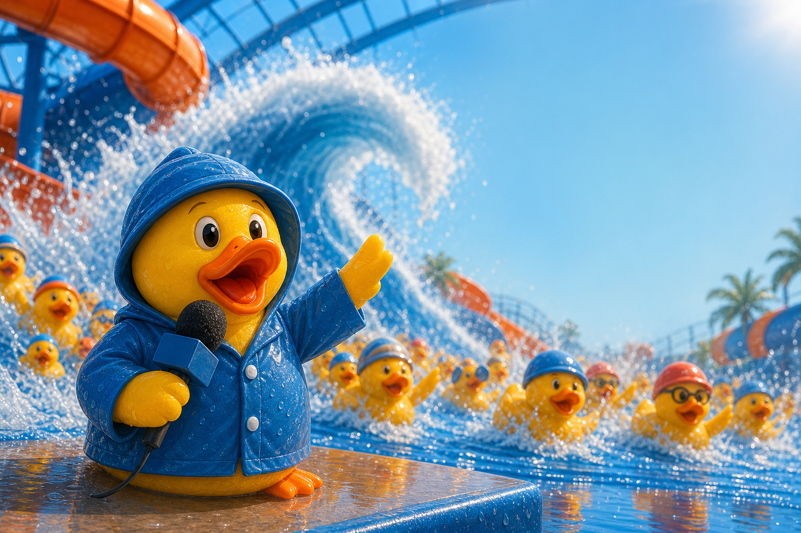
Forecast: Ducks
This prompt creates a funny campaign lane for announcements. The weather reporter idea naturally supports countdowns, updates, and "breaking news" posts.
A ridiculous promotional image for a nonprofit rubber duck race fundraiser, a yellow rubber duck pretending to be a weather reporter in front of a giant waterslide splash wave, tiny microphone, dramatic water forecast energy, other ducks racing behind it, bright indoor waterpark setting, silly family-friendly humor, warm nonprofit tone, clean space for headline text, brand colors dark blue #24588D, red #BE1E2D, orange #F15A29, yellow #FBB040, polished playful digital illustration, no readable text, no logos
Overlay idea: Today's Forecast: 100% Chance of Ducks.
Practical Rules
What Made the Prompts Work
Specific Props Beat Vague Humor
Goggles, clipboards, foam dumbbells, microphones, trophies, and blank signs gave the image model concrete comedy to render.
No Text Inside the Image
The final event name, logo, date, pricing, and adoption CTA should be added afterward for accuracy and brand control.
Mission in the Caption
The image earns attention with humor. The caption or overlay connects that attention back to Camp I Am Me and burn survivor support.
Recommended line to pair with the silly visuals: Every duck adopted helps support Camp I Am Me's free programs for burn survivors.
Next Campaign Step
Build a Rotating Set of Funny Social Posts
Use the funniest images as the top of the funnel, then rotate prize, adoption, countdown, and mission messages as people get closer to adopting a duck.